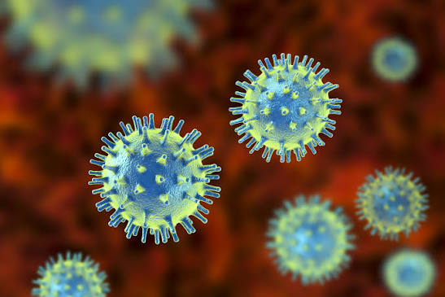
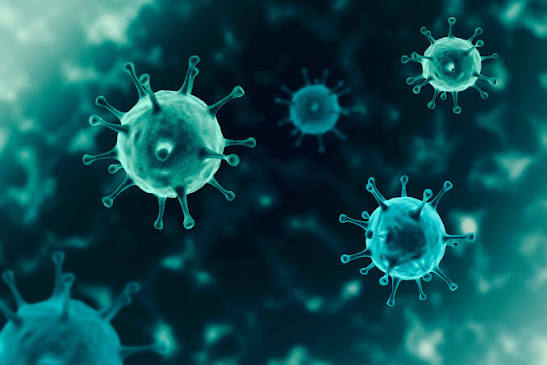

Surveillance and rapid diagnostic response for Ebola, Marburg, and related haemorrhagic fever outbreaks.
Long-standing research into yellow fever, Zika, dengue, and other mosquito-and tick-borne viruses.
Molecular epidemiology and clinical research supporting national and regional HIV response, and monitoring for newly emerging viral threats.
Uganda's national reference institute for viral disease research, diagnostics, and outbreak response, based in Entebbe.


A lot of training to support further career development for the best young scientists at graduate, Master of science and post-doctoral researchers with support from our partners on campus, in the country and outside Uganda is appreciated. For the academic year 2018 UVRI supported over 80 internship attachments for graduate and MSC interns. This year 2019, 70 placements are lined up. Short term placement for internship at UVRI is by application form on the UVRI website (http://localhost/uvri-bkup/uvri-internship-forms. UVRI also conducts open days every after two years to interest pupils to the science career. Training at UVRI is conducted with support from our partners. With such support, the Institute is rapidly developing as an internationally recognized center for research training, with workshops and short courses providing opportunities both for Institute staff, and for national, regional and international clientele.
The Institute strives to maintain competency and improve scientific and technical skills of clinical microbiology, laboratory, and medical practitioners. This is done by providing public health microbiology training to scientists, clinicians, public health specialist and environmental officers through in-service training, workshops, conferences, short and long term courses and attachments. Institute staff participate in training at international level of laboratory scientists through exchange visits, short courses, masters and PhD level training. The Institute organizes and contributes to national and international training workshops and meetings many of which are attended by staff at all levels. UVRI also contributes to the public understanding of science by organizing open days to schools, colleges and universities, presentations to public invited, press conferences and releases, articles in the print media, radio and TV talk shows. For the open day for 2018 for instance, UVRI reached out to over 1000 students from secondary schools and Universities in Uganda Scientific staff are always encouraged to obtain higher qualifications, write scientific papers and winning grants.